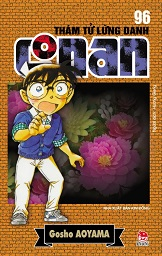

TRUYỆN ĐỀ CỬ

SHIN-CẬU BÉ BÚT CHÌ TẬP 50
Shin – Cậu bé bút chì (クレヨンしんちゃん Kureyon Shin-chan?), còn được biết đến với tựa đề tiếng Anh: Crayon Shin-chan, là một bộ truyện tranh do Yoshito Usui sáng tác và minh họa, với nhân vật chính là Shin, tên viết tắt của Shinnosuke, một cậu bé mới lên 5 tuổi trong một gia đình Nhật Bản bình thường: Ba là Hiroshi,một trưởng phòng một công ty, mẹ là Misae, ở nhà làm nội trợ. Chú bé Shin và gia đình có thể coi là một gia đình tiêu biểu cho tầng lớp trung lưu của Nhật Bản, một gia đình được lấy mẫu từ bất kỳ gia đình nào trong xã hội Nhật Bản thời nay. Bất kỳ người đọc nào nhìn vào có thể thấy một phần của gia đình mình trong đó, điều đó đã tạo nên sự gần gũi giữa Shin và bạn đọc. Nội dung kể về cậu bé Shin với những câu chuyện phiêu lưu cùng với ba mẹ, em gái, chú chó Bạch Tuyết, bạn bè, và cùng những nhân vật khác.
Shin – Cậu bé bút chì (クレヨンしんちゃん Kureyon Shin-chan?), còn được biết đến với tựa đề tiếng Anh: Crayon Shin-chan, là một bộ truyện tranh do Yoshito Usui sáng tác và minh họa, với nhân vật chính là Shin, tên viết tắt của Shinnosuke, một cậu bé mới lên 5 tuổi trong một gia đình Nhật Bản bình thường: Ba là Hiroshi,một trưởng phòng một công ty, mẹ là Misae, ở nhà làm nội trợ. Chú bé Shin và gia đình có thể coi là một gia đình tiêu biểu cho tầng lớp trung lưu của Nhật Bản, một gia đình được lấy mẫu từ bất kỳ gia đình nào trong xã hội Nhật Bản thời nay. Bất kỳ người đọc nào nhìn vào có thể thấy một phần của gia đình mình trong đó, điều đó đã tạo nên sự gần gũi giữa Shin và bạn đọc. Nội dung kể về cậu bé Shin với những câu chuyện phiêu lưu cùng với ba mẹ, em gái, chú chó Bạch Tuyết, bạn bè, và cùng những nhân vật khác.

THÁM TỬ LỪNG DANH CONAN TÂP.69
Thám tử lừng danh Conan (名探偵コナン (Danh thám trinh Conan) Meitantei Konan?, tựa tiếng Anh: "Detective Conan", tại Mỹ có tên là "Case Closed") là một bộ manga Nhật Bản dành cho lứa tuổi thiếu niên thuộc thể loại trinh thám được vẽ và minh họa bởi Aoyama Gosho. Bộ truyện này ban đầu là những chương truyện nhỏ được đăng trên tuần báo Shōnen Sunday của Shogakukan từ ngày 19 tháng 1 năm 1994 sau đó được đóng thành các tập tankōbon.[1] Tác phẩm xoay quanh câu chuyện về chàng thám tử trung học Kudo Shinichi trong một lần đang điều tra đã bị Tổ chức Áo Đen ép uống thuốc độc, khiến cho cơ thể của cậu bị teo nhỏ và phải sống dưới thân phận là cậu bé Edogawa Conan.
Thám tử lừng danh Conan (名探偵コナン (Danh thám trinh Conan) Meitantei Konan?, tựa tiếng Anh: "Detective Conan", tại Mỹ có tên là "Case Closed") là một bộ manga Nhật Bản dành cho lứa tuổi thiếu niên thuộc thể loại trinh thám được vẽ và minh họa bởi Aoyama Gosho. Bộ truyện này ban đầu là những chương truyện nhỏ được đăng trên tuần báo Shōnen Sunday của Shogakukan từ ngày 19 tháng 1 năm 1994 sau đó được đóng thành các tập tankōbon.[1] Tác phẩm xoay quanh câu chuyện về chàng thám tử trung học Kudo Shinichi trong một lần đang điều tra đã bị Tổ chức Áo Đen ép uống thuốc độc, khiến cho cơ thể của cậu bị teo nhỏ và phải sống dưới thân phận là cậu bé Edogawa Conan.

TRẠNG QUỶNH
Trạng Quỳnh – Trạng Quỷnh là một bộ truyện tranh thiếu nhi nhiều tập của Việt Nam, tập truyện đầu tiên mang tên Sao sáng xứ Thanh được Nhà xuất bản Đồng Nai phát hành giữa tháng 6 năm 2003. Ban đầu, tác phẩm được đặt là Trạng Quỳnh (từ tập 1 đến tập 24), còn từ tập 25 trở đi thì đặt tên là Trạng Quỷnh. Tác phẩm được thực hiện bởi tác giả Kim Khánh. Bộ truyện được phát hành bởi Nhà xuất bản Đồng Nai. Trung bình một tháng thì hai tập truyện Trạng Quỳnh – Trạng Quỷnh (tranh đen trắng) được phát hành. .
Trạng Quỳnh – Trạng Quỷnh là một bộ truyện tranh thiếu nhi nhiều tập của Việt Nam, tập truyện đầu tiên mang tên Sao sáng xứ Thanh được Nhà xuất bản Đồng Nai phát hành giữa tháng 6 năm 2003. Ban đầu, tác phẩm được đặt là Trạng Quỳnh (từ tập 1 đến tập 24), còn từ tập 25 trở đi thì đặt tên là Trạng Quỷnh. Tác phẩm được thực hiện bởi tác giả Kim Khánh. Bộ truyện được phát hành bởi Nhà xuất bản Đồng Nai. Trung bình một tháng thì hai tập truyện Trạng Quỳnh – Trạng Quỷnh (tranh đen trắng) được phát hành. .